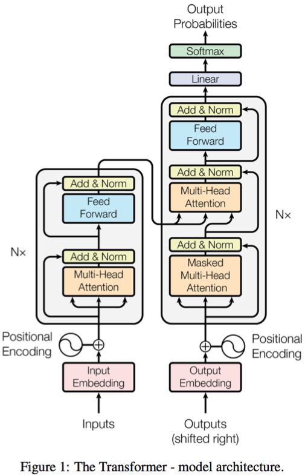
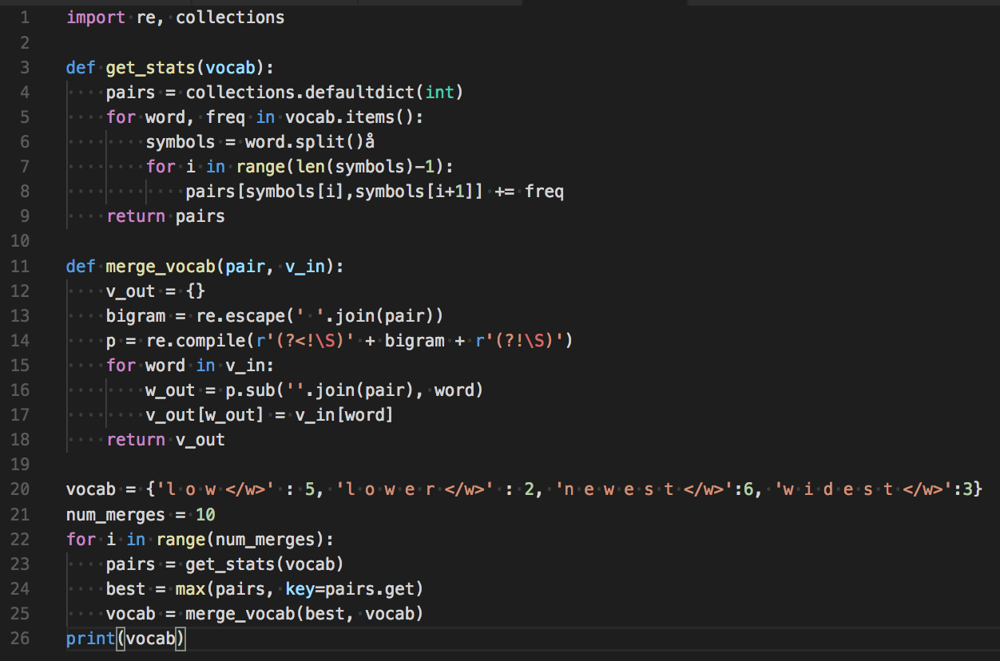
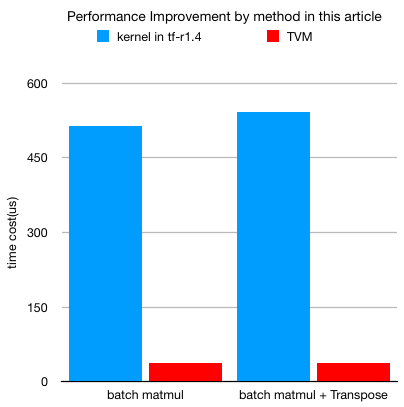

Building Streaming pipelines for Neural Machine Translation
Suneel Marthi
Kellen Sunderland
April 19, 2018
DataWorks Summit, Berlin, Germany
$WhoAreWe
Kellen Sunderland
@KellenDB
- Member of Apache Software Foundation
- Contributor to Apache MXNet (incubating), and committer on Apache Joshua (incubating)
Suneel Marthi
@suneelmarthi
- Member of Apache Software Foundation
- Committer and PMC on Apache Mahout, Apache OpenNLP, Apache Streams
Agenda
- What is Machine Translation ?
- Why move to NMT from SMT ?
- NMT Samples
- NMT Challenges
- Streaming Pipelines for NMT
- Demo
OSS Tools
- Apache Flink - A distributed stream processing engine written in Java and Scala.
- Apache OpenNLP - A machine learning toolkit for Natural Language Processing, written in Java.
- Apache Thrift - A framework for cross-language services development.
OSS Tools (contd)
- Apache Joshua (incubating) - A statistical machine translation decoder for phrase-based, hierarchical, and syntax-based machine translation, written in Java.
- Apache MXNet (incubating) - A flexible and efficient library for deep learning.
- Sockeye - A sequence-to-sequence framework for Neural Machine Translation based on Apache MXNet Incubating.
What is Machine Translation ?
Statistical Machine Translation
Generate Translations from Statistical Models trained on Bilingual Corpora.
Translation happens per a probability distribution p(e|f)
E = string in the target language (English)
F = string in the source language (Spanish)
e~ = argmax p(e|f) = argmax p(f|e) * p(e)
e~ = best translation, the one with highest probabilityWord-based Translation
- How to translate a word → lookup in dictionary
- Gebäude — building, house, tower.
- Multiple translations
- some more frequent than others
for instance: house and building most common
Look at a parallel corpus
(German text along with English translation)
| Translation of Gebäude | Count | Probability |
|---|---|---|
| house | 5.28 billion | 0.51 |
| building | 4.16 billion | 0.402 |
| tower | 9.28 million | 0.09 |
Alignment
- In a parallel text (or when we translate), we align words in one language with the word in the other
Das Gebäude ist hoch ↓ ↓ ↓ ↓ the building is high - Word positions are numbered 1—4
Alignment Function
- Define the Alignment with an Alignment Function
- Mapping an English target word at position
itoaGerman source word at positionjwith a functiona : i → j - Example
a : {1 → 1, 2 → 2, 3 → 3, 4 → 4}One-to-Many Translation
A source word could translate into multiple target words
| Das | ist | ein | Hochhaus | ||
| ↓ | ↓ | ↓ | ↙ | ↓ | ↘ |
| This | is | a | high | rise | building |
Phrase-based Translation
Phrase-Based Model
| Berlin | ist | ein | herausragendes | Kunst- und Kulturzentrum | . |
| ↓ | ↓ | ↓ | ↓ | ↓ | ↓ |
| Berlin | is | an | outstanding | Art and cultural center | . |
- Foreign input is segmented in phrases
- Each phrase is translated into English
- Phrases are reordered
Alignment Function
- Word-Based Models translate words as atomic units
- Phrase-Based Models translate phrases as atomic units
- Advantages:
- many-to-many translation can handle non-compositional phrases
- use of local context in translation
- the more data, the longer phrases can be learned
- “Standard Model”, used by Google Translate until 2016 (switched to Neural MT)
Decoding
- We have a mathematical model for translation
p(e|f) - Task of decoding: find the translation
ebestwith highest probability
ebest = argmax p(e|f) - Two types of error
- the most probable translation is bad → fix the model
- search does not find the most probable translation → fix the search
Neural Machine Translation
Generate Translations from Neural Network models trained on Bilingual Corpora.
Translation happens per a probability distribution one word at time (no phrases).

NMT is deep learning applied to machine translation.
"Attention Is All You Need" - Ashish Vaswani, Noam Shazeer, Niki Parmar, Jakob Uszkoreit, Llion Jones, Aidan N. Gomez, Lukasz Kaiser, Illia Polosukhin
Google Brain https://arxiv.org/abs/1706.03762
Why move from SMT to NMT?
- Research results were too good to ignore.
- The fluency of translations was a huge step forward compared to statistical systems.
- We knew that there would be exciting future work to be done in this area.
Why move from SMT to NMT?

The University of Edinburgh’s Neural MT Systems for WMT17 – Rico Sennrich, Alexandra Birch, Anna Currey, Ulrich Germann, Barry Haddow, Kenneth Heafield, Antonio Valerio Miceli Barone and Philip Williams.
SMT versus NMT at Scale
| Apache Joshua | Sockeye |
|---|---|
| Reasonable Quality Translation | High Quality Translations |
| Java / C++ | Python 3 / C++ |
| Model size 60GB-120GB | Model size 256 MB |
| Complicated Training Process | Simple Training Process |
| Relatively complex implementation | 400 lines of code |
| Low translation costs | High translation costs |
SMT versus NMT at Scale
| Apache Joshua | Sockeye |
|---|---|
| Reasonable Quality Translation | High Quality Translations |
| Java / C++ | Python 3 / C++ |
| Model size 60GB-120GB | Model size 256 MB |
| Complicated Training Process | Simple Training Process |
| Relatively complex implementation | 400 lines of code |
| Low translation costs | High translation costs |
NMT Samples
Jetzt LIVE: Abgeordnete debattieren über Zuspitzung des Syrien-Konflikts.
last but not least, Members are debating the escalation of the Syrian conflict.
Sie haben wenig Zeit, wollen aber Fett verbrennen und Muskeln aufbauen?
You have little time, but want to burn fat and build muscles?
NMT Challenges – Twitter Content
NMT Challenges – Input
- The input into all neural network models is always a vector.
- Training data is always parallel text.
- How do you represent a word from the text as a vector?
Embedding Layer

NMT Challenges – Rare Words
Ok we can now represent 30,000 words as vectors, what about the rest?
NMT Challenges – Byte Pair Encoding
Rico Sennrich, Barry Haddow and Alexandra Birch (2016): Neural Machine Translation of Rare Words with Subword Units Proceedings of the 54th Annual Meeting of the Association for Computational Linguistics (ACL 2016). Berlin, Germany.
Byte Pair Encoding
"positional addition contextual"Byte Pair Encoding
"posiXonal addiXon contextual" ti = XByte Pair Encoding
"posiXonY addiXon contextuY" ti = X al = YByte Pair Encoding
"posiZnY addiZn contextuY" ti = X al = Y Xo = ZByte Pair Encoding
theseing
other
s,
must
Member
NMT Challenges – Jagged Tensors
Input is not sorted by length.
Jagged Tensors cont.

Jagged Tensors cont.

Jagged Tensors cont.

NMT Challenges – Cost
- Step 1: Create great profiling tools, measurement.
- Step 2: Get specialists to optimize bottlenecks.
- Step 3: ???
- Step 4: Profit.
New layer norm, top-k, batch-mul, transpose, smoothing op. 3.5x speedup so far. Working in branches:
https://github.com/MXNetEdge/sockeye/tree/dev_speed
https://github.com/MXNetEdge/incubator-mxnet/tree/dev_speed
Apache MXNet Profiling Tools
| CPU Profiler (vtune) | GPU Profiler (nvprof) |
|---|
TVM
TVM is a Tensor intermediate representation(IR) stack for deep learning systems. It is designed to close the gap between the productivity-focused deep learning frameworks, and the performance- and efficiency-focused hardware backends. TVM works with deep learning frameworks to provide end to end compilation to different backends.
https://github.com/dmlc/tvm
Alibaba TVM Optimization
http://tvmlang.org/2018/03/23/nmt-transformer-optimize.html
Alibaba TVM Optimization
Facebook - Tensor Comprehensions
https://research.fb.com/announcing-tensor-comprehensions/
Streaming Pipelines for NMT
NMT Inference Preprocessing

Language Detection (Flink + OpenNLP)
Sentence Detection (Flink + OpenNLP)
Tokenization (Flink + OpenNLP)
SockeyeTranslate (Flink + Thrift)
Complete Pipeline (Flink)

NMT Inference Pipeline

Credits
Apache OpenNLP Team
Apache Flink Team

Credits cont.
- Asmus Hetzel (Amazon), Marek Kolodziej (NVIDIA), Dick Carter (NVIDIA), Tianqi Chen (U of W), MKL-DNN Team (Intel)
- Sockeye: Felix Hieber (Amazon), Tobias Domhan (Amazon), David Vilar (Amazon), Matt Post (Amazon)
- Apache Joshua: Matt Post (Johns Hopkins), Tommaso Teofili (Adobe), NASA JPL
- University of Edinburgh, Google, Facebook, NYU, Stanford
Links
- Attention is All You Need, Annotated: http://nlp.seas.harvard.edu/2018/04/03/attention.html
- Sockeye training tutorial: https://github.com/awslabs/sockeye/tree/master/tutorials/wmt
- Intro Deep Learning Tutorial: http://gluon.mxnet.io
- Slides: https://smarthi.github.io/DSW-Berlin18-Streaming-NMT/
- Code: https://github.com/smarthi/streamingnmt
Questions ???
Sockeye Model Types
- RNN Models
- Convolutional Models
- Transformer Models